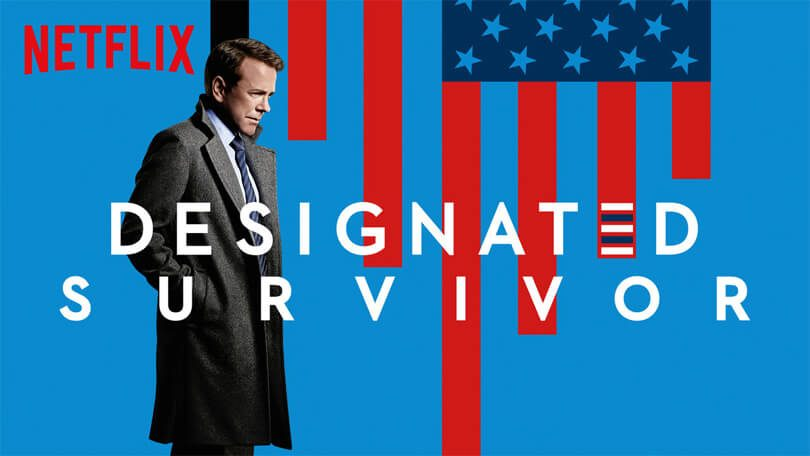
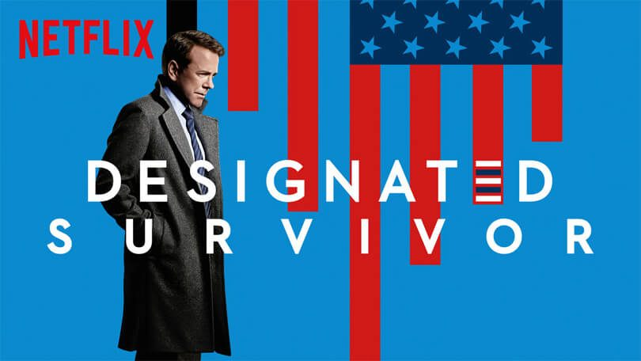
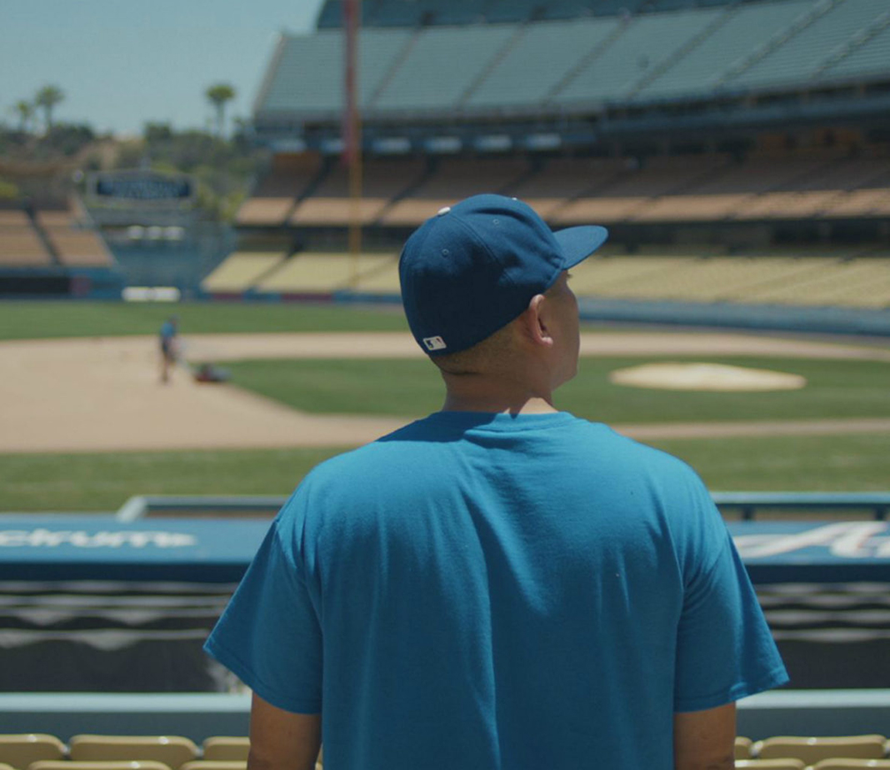

Nieuws


 

Elke week worden er nieuwe titels toegevoegd op Netflix: in samenwerking met Superguide plaatst NU.nl een overzicht van films en series die afgelopen week op de streamingdienst verschenen.
Kiefer Sutherland keert terug als president Tom Kirkman, in het tweede seizoen van Designated Survivor. Het onervaren staatshoofd probeert het machtigste land ter wereld te besturen, terwijl een mysterieuze organisatie de regering ondermijnt.
Marlon Brando en Al Pacino stralen als Vito en Michael Corleone, in Francis Ford Coppola’s The Godfather. Coppola’s meesterwerk uit 1972 blies weer leven in films over de georganiseerde misdaad, en zette een nieuwe standaard neer.
Series
De nieuwe Star Trek-serie Discovery volgt eerste luitenant Michael Burnham (Sonequa Martin-Green) als officier in de ruimtevloot van de Federation. De serie speelt zich af vóór de avonturen van kapitein Kirk en Mr. Spock op de USS Enterprise.
Nieuwe serie Star Trek Discovery: speelt zich tien jaar voor Kirk en Enterprise af Nieuwe serie Star Trek Discovery: speelt zich tien jaar voor Kirk en Enterprise af June Colburn (Dreama Walker) verhuist van het platteland naar New York, in de sitcom Don’t Trust The B---- in Apartment 23. Ze sluit vriendschap met haar losgeslagen flatgenoot Chloe (Krysten Ritter). Meer humor zie je in de politiekomedie Brooklyn Nine-Nine, waarvan drie seizoenen op Netflix verschenen.
Voormalig journalist Martin Bohm (Kiefer Sutherland) ontdekt dat zijn autistische zoon (David Mazouz) de toekomst kan voorspellen door middel van cijferreeksen, in de dramaserie Touch.
Films
Jessie (Carla Gugino) en Gerald (Bruce Greenwood) proberen hun uitgebluste huwelijk nieuw leven in te blazen, met een weekendje in een afgelegen bungalow. De erotische spanning verandert al snel in doodsangst, in de psychologische horrorfilm Gerald’s Game. Gebaseerd op de novelle van Stephen King.
Een klantenservicemedewerker (David Thewlis) zit zó diep in de put dat iedereen om hem heen (Tom Noonan) er precies hetzelfde uitziet. Dan ontmoet hij een vrouw met een eigen gezicht (Jennifer Jason Leigh). Is dit zijn kans om weer gelukkig te worden? Anomalisa, een stop-motion comedy/dramafilm, werd genomineerd voor een Oscar en een Emmy.
Documentaires
De misdaaddocumentaire Long Shot toont het waargebeurde verhaal van Juan Catalan. Catalan werd verdacht van een gewelddadige moord, en had geen waterdicht alibi. De doodstraf hing hem boven het hoofd, tot opnames van de comedyserie Curb Your Enthusiasm bewezen dat hij de moord niet gepleegd kón hebben.
Minder zware kost vind je in Paul Hollywood’s Big Continental Road Trip. De chefkok (en jurylid van The Great British Bake-Off) steekt het kanaal over, en duikt in de cultuur van verschillende Europese landen. Hollywood combineert zijn passie voor auto’s met lokale lekkernijen.
Stand-up comedy en cabaret
25 jaar geleden startte HBO met een stand-up comedyserie: Def Comedy Jam. Het programma werd dé springplank voor gekleurde comedians als Chris Tucker, Kevin Hart, Jamie Foxx en Bernie Mac. In Def Comedy Jam 25 brengen verschillende komieken een ode aan de show. Met o.a. Dave Chappele, Cedric the Entertainer en Tiffany Haddish.